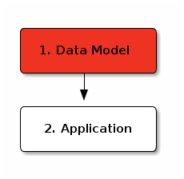
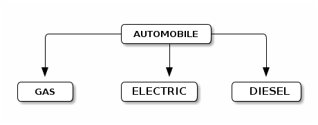
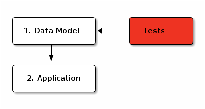
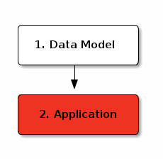

auto-maintenance
Table of Contents
1 Rationale
This is a solution for a programming test. The test is making a application for tracking automobile maintenance that supports a web & console interface.
To help the evaluator, I've tried to minimize external dependencies and set the system up to download, compile and install those dependencies.
This means I don't depend on Apache nor PostgreSQL… as a result, my objects are not persisted. Please don't hold this against me. I can provide persistence code, if the evaluator wants to spend time setting up a PostgreSQL database to persist against.
I have not provided a command line interface – Slime (and the lisp REPL) renders that redundant. But there are unit tests and a web interface.
2 Quick Start
Start the web interface with this command:
sbcl --no-userinit --no-sysinit --load "start.lisp"
It will:
- download dependencies,
- compile them,
- compile the application,
- start a web server.
Assuming no errors, *Open your browser http://127.0.0.1:8080* If there were errors, get in touch: mailto:warrenwilkinson@gmail.com
You can run the tests with
sbcl --no-userinit --no-sysinit --load "test.lisp"
This will download dependencies (including the test framework), compile them, etc…
3 Data-Model

Description:
"The system should support at least three car types: electric, gas and diesel. Each vehicle should have at minimum a make, model, year and odometer reading. Maintenance tasks should include 2-3 things like oil changes or tire rotations. However, not all maintenance tasks can be applied to all vehicles (an electric car won’t need an oil change)."
A breakdown like this perhaps?

This breakdown says automobiles have a model, a year, an odometer reading and a type — and type is the most important! It works here, because most of our operations specialize on the automobile type. But it could be wrong if someone was concerned with ordering parts for cars — in this case, manufacturer might be more important. But that's a problem we don't have.
(defvar *serial* 0) (deftype id () `(integer 0 ,most-positive-fixnum)) (defclass automobile () ((id :initform (incf *serial*) :reader id :type 'id) (model :initarg :model :accessor model) (year :initarg :year :accessor year) (odometer :initarg :odometer :accessor odometer))) (defclass gas-auto (automobile) ()) (defclass electric-auto (automobile) ()) (defclass diesel-auto (automobile) ())
The next task is operations on cars. In Lisp that's easy because we have multimethods, we can write something like this:
(defclass operation () ((id :initform (incf *serial*) :reader id))) (defclass oil-change (operation) ()) (defclass tire-change (operation) ()) (defmethod perform (operation automobile) (format t "~%Performing ~a on ~a" operation automobile)) (defmethod perform ((op oil-change) (g electric-auto)) (error "You can't change the gas on an electric car."))
Since our application is supposed to track the changes, the simplist way is to just add them onto a maintenance log. I've deliberately kept the association of operations and automobiles outside of both classes. The reason is so that this association could easily be serialized (e.g. to a database or file).
(defmethod perform :around (operation automobile)
(prog1 (call-next-method)
(push operation (gethash automobile *operations*))))
And to complete our API, we need a way to access operations and create instances of our objects. Generally, the API uses IDs for everything. This makes it easy to pass objects around as HTTP get parameters, and makes our library easy to port to a database without changing the API.
(defun make-automobile (type &rest args &key model year odometer)
(declare (ignore model year odometer))
(let ((car (apply #'make-instance type args)))
(setf (gethash car *operations*) nil)
car))
(defun all-cars (&aux (store nil))
"Returns all car objects"
(maphash #'(lambda (k v) (declare (ignore v)) (push k store)) *operations*)
store)
(defun get-car (id)
"Returns the car object with the corresponding ID"
(declare (type id id))
(find id (all-cars) :key #'id))
(defun delete-automobile (id)
"Deletes the car object with the corresponding ID."
(declare (type id id))
(remhash (get-car id) *operations*))
(defun operations-on (id)
"Fetches all operations performed on car with ID"
(declare (type id id))
(gethash (get-car id) *operations*))
(defun delete-operation (id)
"Delete operation with the correspondind ID"
(declare (type id id))
(maphash #'(lambda (k v) (setf (gethash k *operations*) (remove id v :key #'id)))
*operations*))
4 Data-Model Tests

Tests can be run with
sbcl --no-userinit --no-sysinit --load "test.lisp"
4.1 Can Create Vehicles
Test that we can create the three different vehicle types. Just a sanity check really.
(deftest can-create-vehicles ()
(let ((gas (make-automobile 'gas-auto :model "gas"))
(elec (make-automobile 'electric-auto :model "electric"))
(diesel (make-automobile 'diesel-auto :model "diesel")))
(is (not (null gas)))
(is (not (null elec)))
(is (not (null diesel)))))
4.2 Can Get Vehicle by ID
Test that fetching a vehicle by ID returns the correct vehicle.
(deftest can-get-vehicle-by-id ()
(let ((car1 (make-automobile 'gas-auto :model "gas"))
(car2 (make-automobile 'electric-auto :model "gas")))
(is (eq (get-car (id car1)) car1))
(is (eq (get-car (id car2)) car2))))
4.3 Can Delete Vehicle
Test that a vehicle can be deleted, and once deleted can no longer be fetched.
(deftest can-delete-vehicle ()
(let* ((car1 (make-automobile 'gas-auto :model "gas"))
(id1 (id car1))
(car2 (make-automobile 'electric-auto :model "gas")))
(delete-automobile id1)
(is (null (get-car id1)))
(is (eq (get-car (id car2)) car2))))
4.4 Can Perform Operation
Test that operations can be performed, at least for simple operations that should succeed.
(deftest can-perform-operation ()
(let ((car1 (make-automobile 'gas-auto :model "gas"))
(car2 (make-automobile 'gas-auto :model "gas"))
(op (make-instance 'tire-change)))
(finishes (perform op car1))
(is (member op (operations-on (id car1))))
(is (not (member op (operations-on (id car2)))))))
4.5 Cannot Gas Electric Car
Test that we cannot put gas into an electric car.
(deftest cannot-gas-electric-car ()
(let ((gas (make-automobile 'gas-auto))
(electric (make-automobile 'electric-auto))
(oil-change (make-instance 'oil-change)))
(signals error (perform oil-change electric))
(finishes (perform oil-change gas))))
4.6 Can Delete Operation
Test that we can delete operations. And once deleted, the operation should not appear in any cars operations list.
(deftest can-delete-operation ()
(let ((gas (make-automobile 'gas-auto))
(diesel (make-automobile 'diesel-auto))
(tire-change (make-instance 'tire-change))
(oil-change (make-instance 'oil-change)))
(finishes (perform oil-change gas))
(finishes (perform oil-change diesel)) ;; Same op can be applied to many vehicles
(finishes (perform tire-change gas)) ;; API doesn't restrict this at low levels
(is (member tire-change (operations-on (id gas))))
(is (member oil-change (operations-on (id diesel))))
(is (member oil-change (operations-on (id gas))))
(finishes (delete-operation (id tire-change)))
(is (not (member tire-change (operations-on (id gas)))))
(is (member oil-change (operations-on (id diesel))))
(is (member oil-change (operations-on (id gas))))
(finishes (delete-operation (id oil-change)))
(finishes (delete-operation (id tire-change))) ;; Deleting already-deleted things
(is (null (operations-on (id gas)))) ;; is a no-op.
(is (null (operations-on (id diesel)))))) ;; Deletion removes operation
;; from all cars.
4.7 Deleting Car Deletes Operations
Test that deleted cars have no operations, but the operations were not deleted if they were shared.
(deftest deleting-car-deletes-operations ()
(let ((gas (make-automobile 'gas-auto))
(diesel (make-automobile 'diesel-auto))
(tire-change (make-instance 'tire-change))
(oil-change (make-instance 'oil-change)))
(finishes (perform oil-change gas))
(finishes (perform oil-change diesel)) ;; Same op can be applied to many vehicles
(finishes (perform tire-change gas)) ;; API doesn't restrict this at low levels
(is (member tire-change (operations-on (id gas))))
(is (member oil-change (operations-on (id diesel))))
(is (member oil-change (operations-on (id gas))))
(delete-automobile (id gas))
(is (null (operations-on (id gas)))) ;; Deleted vehicles have no operations.
(is (member oil-change (operations-on (id diesel)))))) ;; But it didn't
;; delete shared ops.
4.8 API uses IDs and Nothing Else
Ensure the API uses IDs and passing the wrong type signals an error. This behavior helps end users avoid having (delete-car my-actual-object) somewhere deep in their code that's acting like a no-op.
(deftest api-uses-ids-and-nothing-else ()
(let ((car1 (make-automobile 'gas-auto :model "gas"))
(op (make-instance 'tire-change)))
;; Perform and Make-automobile use the actual objects.
;; Rest of API uses IDs.
;; Rationale: Operation doesn't exist until performed,
;; Thus perform method should save it.
;; And we'd be DB backed, so it makes sense to
;; pass IDs rather than objects.
(finishes (perform op car1))
(signals type-error (get-car car1))
(finishes (get-car (id car1)))
(signals type-error (operations-on car1))
(finishes (operations-on (id car1)))
(signals type-error (delete-automobile car1))
(signals type-error (delete-automobile "string"))
(signals type-error (delete-automobile 'car1))
(finishes (delete-automobile (id car1)))))
5 Application

The application provides HTTP service using hunchentoot. Slime is also started. The web service is just a simple RESTful thing. The first page is the index.
(defun print-car-row (stream car)
(with-html-output (stream stream)
(:tr
(:td (:a :href (format nil "/delete?id=~a" (id car))
"X") " ")
(:td (:a :href (format nil "/car?id=~a" (id car))
(str (class-name (class-of car)))))
(:td (str (model car)))
(:td (str (year car)))
(:td (str (odometer car))))))
(define-easy-handler (index :uri "/") ()
(with-html-output-to-string (stream nil :prologue t)
(:html
(:head (:title "Auto-Maintenance"))
(:body
(:h1 "Auto-Maintenance")
(:p "Welcome to auto maintenance.")
(:hr)
(:h2 "Add New Car")
(:form :method "post" :action "/newcar"
(:dl (:dt (:label :for "model" "Model"))
(:dd (:input :type "text" :name "model"))
(:dt (:label :for "year" "Year"))
(:dd (:input :type "text" :name "year"))
(:dt (:label :for "odometer" "Odometer"))
(:dd (:input :type "text" :name "odometer"))
(:dt (:label :for "type" "type")
(:dd
(:input :type "radio" :id "gas" :name "type"
:value "GAS-AUTO" :checked "t")
(:label :for "gas" "Gas") (:br)
(:input :type "radio" :id "electric"
:name "type" :value "ELECTRIC-AUTO")
(:label :for "electric" "Electric") (:br)
(:input :type "radio" :id "diesel"
:name "type" :value "DIESEL-AUTO")
(:label :for "diesel" "Diesel") (:br))))
(:input :type "submit"))
(:p "The following cars are defined:")
(:table
(:thead (:tr (:th) (:th "Type") (:th "Model")
(:th "Year") (:th "Odometer")))
(:tbody (dolist (car (all-cars))
(print-car-row stream car))))))))
To make the form work, we need a postback handler.
(define-easy-handler (newcar :uri "/newcar")
((model :init-form "Unnamed" :parameter-type 'string)
(year :parameter-type 'integer)
(Odometer :parameter-type 'integer)
(type :init-form "GAS-AUTO" :parameter-type 'string))
(make-automobile (find-symbol type :data-model)
:model model :year year :odometer odometer)
(redirect "/"))
This URL can delete cars.
(define-easy-handler (deletecar :uri "/delete")
((id :parameter-type 'integer))
(and id (delete-automobile id))
(redirect "/"))
While this one can view them, and let you delete or add operations to the vehicle.
(define-easy-handler (viewcar :uri "/car")
((id :parameter-type 'integer)
(msg :parameter-type 'string))
(unless id (redirect "/"))
(let ((car (get-car id)))
(with-html-output-to-string (stream nil :prologue t)
(:html
(:head (:title "Auto-Maintenance"))
(:body
(:h1 "Car " (str id) ": " (str (class-name (class-of car))))
(when msg (htm (:b (esc (url-decode msg)))))
(:hr)
(:a :href "/" "back") (:br)
(:h2 "Operations")
(:a :href (format nil "/oilchange?id=~d" id) "Oil Change") (:br)
(:a :href (format nil "/tirechange?id=~d" id) "Tire Change") (:br)
(:br)
(:ol (dolist (op (operations-on (id car)))
(htm (:li (:a :href (format nil "/delete-operation?id=~d&car=~d"
(id op) (id car)) "X")
" "
(esc (princ-to-string op)))))))))))
(defun do-operation (op car)
(url-encode (with-output-to-string (*standard-output*)
(handler-case (perform op car)
(error (e) (princ e))))))
(define-easy-handler (oilchange :uri "/oilchange")
((id :parameter-type 'integer))
(unless id (redirect "/"))
(let* ((car (get-car id))
(msg (do-operation (make-instance 'oil-change) car)))
(redirect (format nil "/car?id=~d&msg=~a" id msg))))
(define-easy-handler (tirechange :uri "/tirechange")
((id :parameter-type 'integer))
(unless id (redirect "/"))
(let* ((car (get-car id))
(msg (do-operation (make-instance 'tire-change) car)))
(redirect (format nil "/car?id=~d&msg=~a" id msg))))
And one last URL to delete an operation.
(define-easy-handler (del-operation :uri "/delete-operation")
((id :parameter-type 'integer)
(car :parameter-type 'integer))
(when id (delete-operation id))
(redirect (if car (format nil "/car?id=~d&msg=operation%20deleted" car) "/")))
6 start.lisp
To hasten deployment, this program downloads its external dependencies. This is done using two lisp packages:
- ASDF
- 'A System Definition Facilty.' lets me express package interdependencies like you might find in a makefile.
- Quicklisp
- A program for fetching Lisp packages from the internet.
This is bootstrapping. Because we have nothing, we can't start calling ASDF or QUICKLOAD methods (because they don't exist). Every function call requires us to first locate the function in the newly loaded package and then call it.
In C# or Java, you'd reach for reflection libraries and a bottle of Aspirin. Lisp offers us an easy way: Because the compiler is ever-present, we can compile new code at runtime rather than write code that does lookup-then-call behavior. And that's what the eval statements are doing.
Finally, we jump into our read program start point, safe in the knowledge that all dependencies have been met.
(format t "~%Downloading required dependencies...~%")
;; Load quicklisp
(load "quicklisp" :if-does-not-exist :error)
(eval `(handler-bind ((error
#'(lambda (e)
(declare (ignore e))
(invoke-restart 'quicklisp-quickstart::load-setup))))
(quicklisp-quickstart::install)))
;; Now that it's ready, use ASDF to load our program,
;; and quicklisp to download missing dependencies.
(eval `(handler-bind ((asdf::missing-dependency
#'(lambda (e)
(quicklisp:quickload (slot-value e 'asdf::requires))
(invoke-restart 'asdf::retry))))
(asdf:oos 'asdf:load-op :auto-maintenance)))
(format t "~%All dependencies loaded... Running program.")
(funcall (find-symbol "MAIN" :auto-maintenance))
The file, test.lisp, is pretty identical to this one. Except it runs the tests and quits.
7 License
auto-maintenance is distributed under the LGPL2 License.